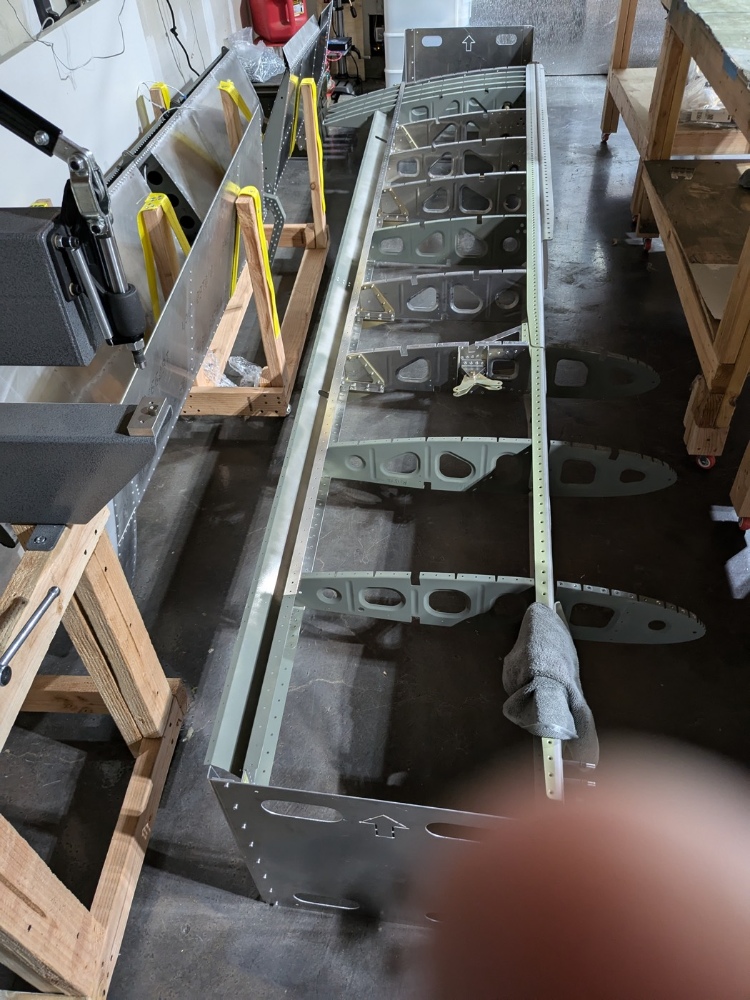
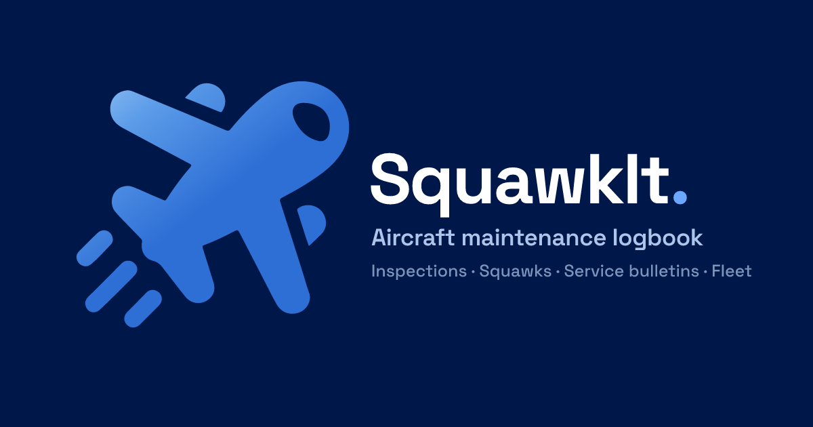

Making things fly, digitally and physically.
Two projects, side by side: one that lives on a screen, one that lives in a hangar. Take your pick.
Projects
01 / build

Sling TSi Build Log
Building a Sling TSi from a kit, a four-seat composite aircraft, documented system by system: engine, fuselage, empennage, avionics, and every squawk in between.
n532sl.fanfly.dev
02 / app

SquawkIt
An aircraft maintenance logbook for pilots and owners: log squawks, manage work orders, and keep a tidy record so nothing slips between inspections.
squawkit.fanfly.dev